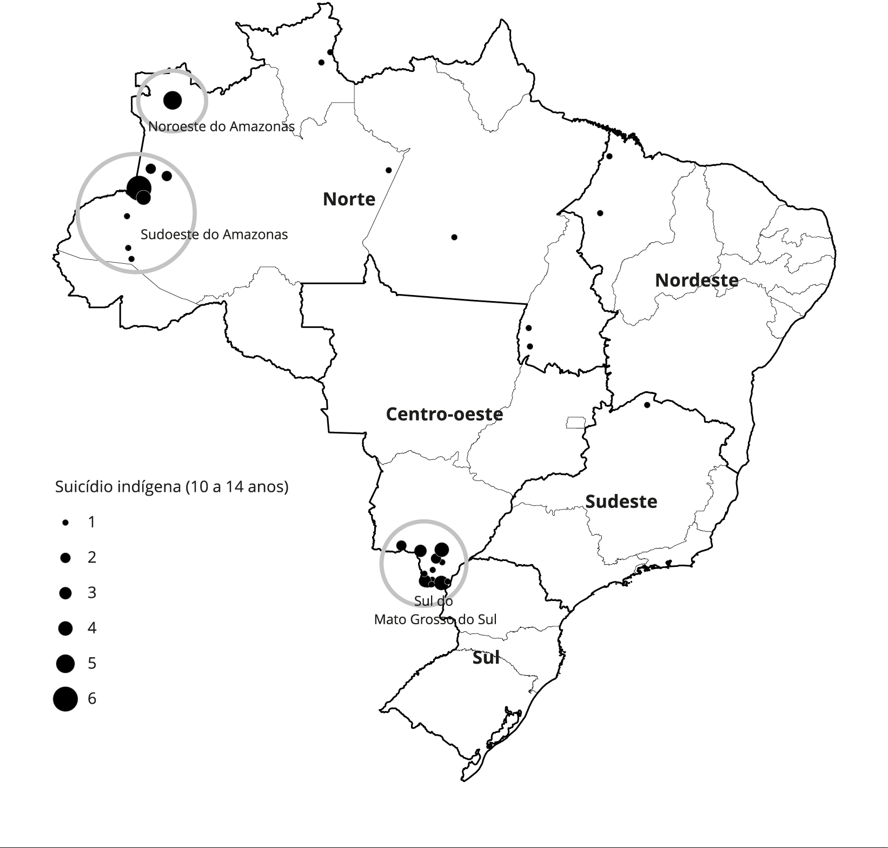

5
TEXTO I
Segundo o Ministério da Saúde, em 2017 o Brasil registrou uma média nacional de 5,7 óbitos para 100 mil habitantes. Na população indígena, foi registrado um número de óbitos três vezes maior que a média nacional – 15,2. Destes registros, 44,8% (aproximadamente, 6,8 óbitos), são suicídios de crianças e adolescentes entre 10 e 19 anos. Esses dados contrastam com o panorama nacional, em que o maior índice é entre adolescentes e adultos de 15 a 20 anos.
Disponível em: htt ps://www.cvv.org.br/blog/o-suicidio-do-povo-indigena/. Acesso em: 30 de abr. 2020 (adaptado).
TEXTO II
Evidências apontam que, em determinadas minorias étnico-raciais, como os indígenas (aborígines ou
populações nati vas), o suicídio entre crianças apresenta taxas bem mais elevadas do que as observadas
na população geral. No Brasil, o enforcamento foi uti lizado mais frequentemente entre indígenas do que
entre não indígenas, não se observando, no primeiro grupo, suicídios por intoxicação ou por armas de
fogo. O mapa a seguir apresenta a distribuição dos óbitos por suicídio entre crianças e adolescentes
indígenas no Brasil, entre os anos de 2010 e 2014.

SOUZA, M. Mortalidade por suicídio entre crianças indígenas no Brasil. Caderno de Saúde Pública, v.35, Rio de Janeiro, 2019 (adaptado).
Considerando as informações apresentadas e o alto índice de suicídio da população indígena, avalie as
afirmações a seguir.
I. O elevado índice de suicídios entre crianças e adolescentes indígenas no país evidencia a
necessidade de ações com foco nos direitos fundamentais desses indivíduos.
II. Os estados do Pará e de Tocanti ns são os que possuem os maiores índices de suicídio de indígenas
na faixa etária de 10 a 14 anos.
III. Os povos das tribos originárias do Brasil, no que tange a sua história e preservação cultural,
não estão amparados por direitos e garantias constitucionais.
IV. O estabelecimento de ações preventi vas ao suicídio nas comunidades indígenas deve considerar
os elementos globais que afetam a população em geral, na faixa etária entre 15 e 20 anos.
É correto apenas o que se afirma em